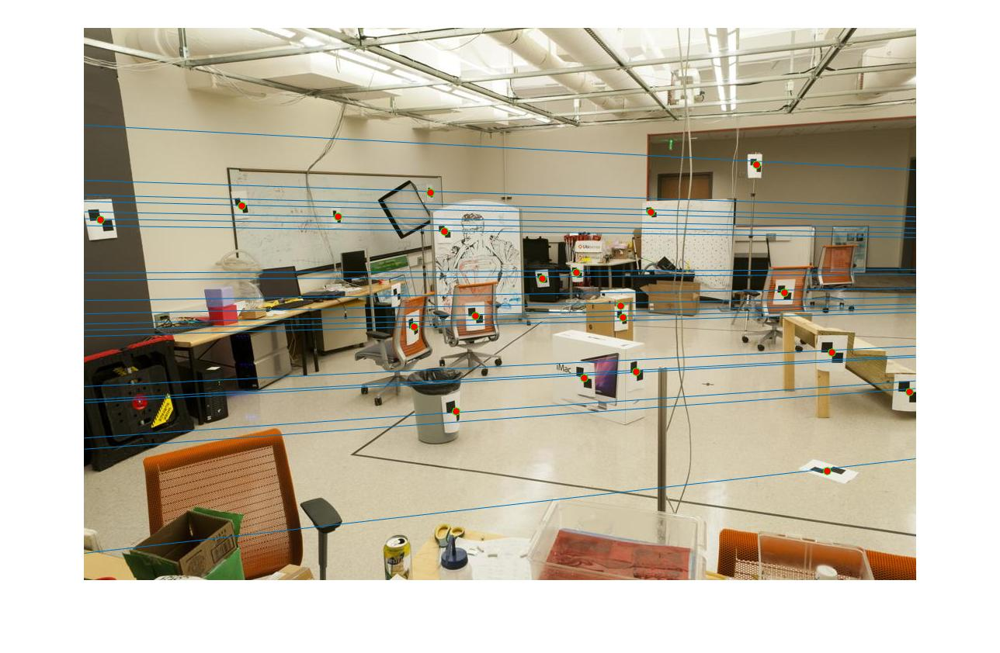
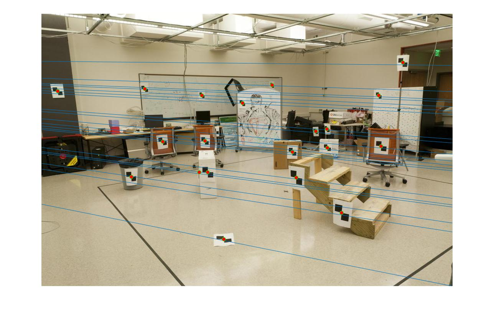
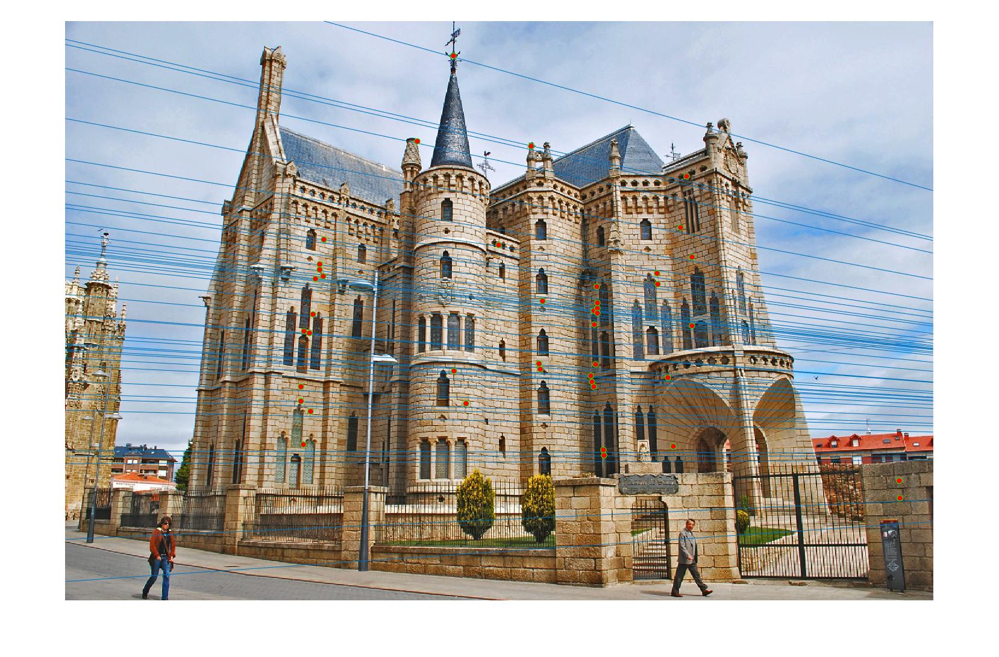
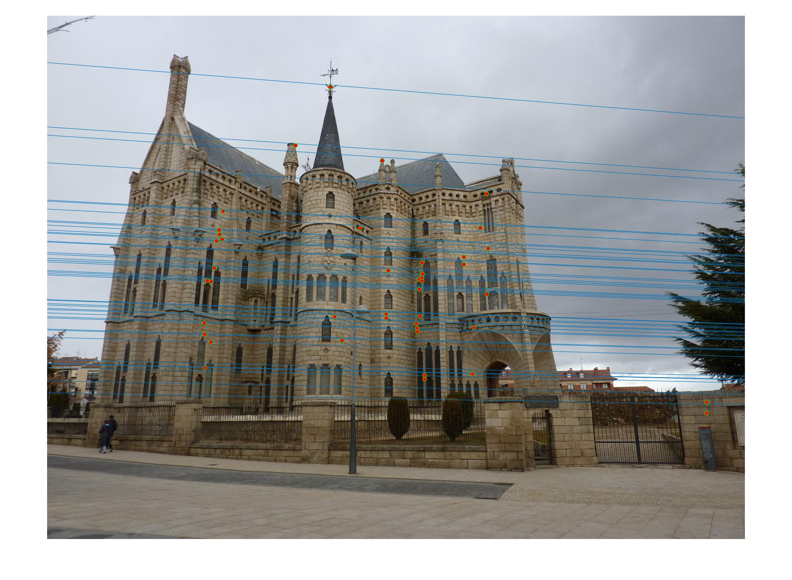
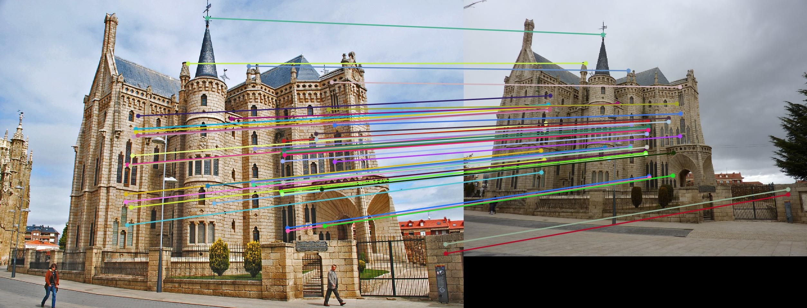

The fundamental matrix relates two points on two images of the same scene, and it has 7 degrees of freedom. The essential matrix is a specialized form of the fundamental matrix that is also used similarly to relate two points. In the essential matrix the cameras are calibrated, and thus there are only 5 degrees of freedom.
a) Epipolar lines will only cross at the epipole. This location corresponds to the projection of Camera Two's location onto the image plane of Camera One.
b) Radiating epipolar lines indicate that the cameras are positioned above each other or the other camera location is in view of the camera.
c) The second camera is out of view of the first camera.
Rectification is an transformation such that the epipolar lines on the transformed image are parallel. Rectification is performed to simplify the search process: one only has to search along horizontal lines. Rectification transforms a 2D search problem into a 1D search problem.
My proj3_part1.m code calls calculate_projection_matrix.m to find a projection matrix given corresponding 2D and 3D points. My calculate_projection_matrix.m code uses the MATLAB operator "\" to find the least squares estimate of the projection matrix.
My program returns a projection matrix:
[0.7679, -0.4938, -0.0234, 0.0067]
[-0.0852, -0.0915, -0.9065, -0.0878]
[0.1827, -0.2988, -0.0742, 1.0000]
This projection matrix is a scalar multiple of the provided best estimate. Additionally, my code estimates a camera center at (-1.5126, -2.3517, 0.2827).
My proj3_part2.m code calculates the fundamental matrix of a given pair of correspondences using single value decomposition. My algorithm reduces the fundamental matrix estimation to rank 2 by setting the smallest singular value to zero and reconstructing the matrix.
The two figures below show the epipolar lines drawn on the given scene. My program estimates a Fundamental matrix:
[-0.0000, 0.0000, -0.0019]
[0.0000, 0.0000, 0.0172]
[-0.0009, -0.0264, -0.9995]
 My proj3_part3.m program uses RANSAC to estimate a fundamental matrix given two sets of matched SIFT features.
RANSAC Algorithm
For the Mount Rushmore pair I increased the confidence in the sift_wrapper.m to 3 in order to operate on more confident matches. I achieved consistent results running RANSAC on the Mount Rushmore photos. Of 241 potential matches I achieved 241 inliers using RANSAC. However, the points on the far right of the second image are not intersected by epipolar lines. This suggests that the Fundamental matrix may actually be incorrect, but by mathematical coincidence achieves a near zero value for the distance metric on these points.
For the Notre Dame pair I again increased the confidence in the sift_wrapper.m to 3. I achieved extremely inconsistent results running RANSAC on the Mount Rushmore photos. Of 510 potential matches I would often achieve 508-510 inliers using RANSAC. However, the epipolar lines would indicate clearly impossible relationships between images. Nonetheless, I was sometimes able to obtain reasonable results.
  For the Episcopal Gaudi pair I increased the confidence even further to 4.5. There were only 43 matches that passed this confidence test. I achieved somewhat consistent results running RANSAC on the Episcopal Guadi photos, and I would always achieve all 43 inliers. The epipolar lines imply that both camera locations are located to the right each other, which is obviously impossible. Nonetheless, the epipolar lines intersect the points well and provide accurate matches.